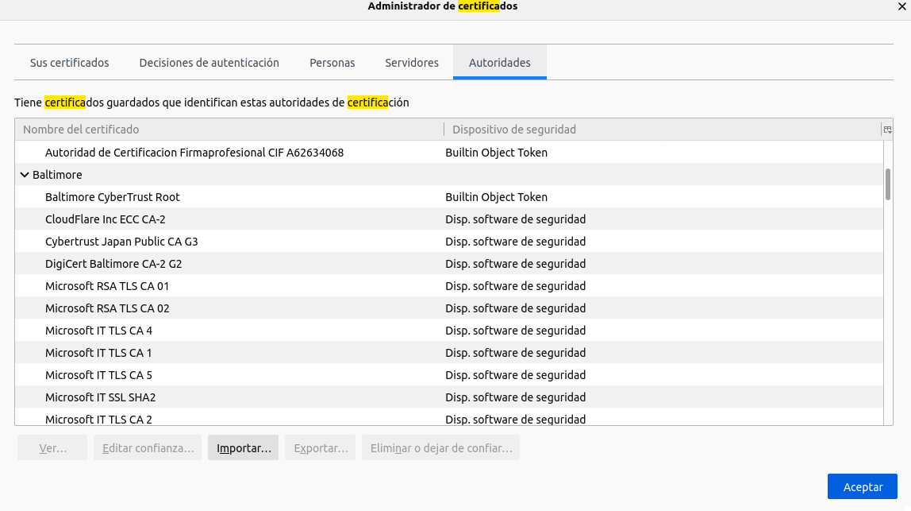
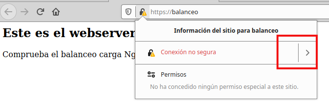

Practica 3.4 - Activación HTTPS
Activación HTTPS en Nginx
Atención, muy importante antes de empezar
- La práctica de creación de Autenticación en Nginx ha de estar funcionando correctamente
- No empezar la práctica antes de tener esa práctica funcionando y comprobada
Como vimos en la teoría el protocolo HTTP es un procotoco inseguro, ya que las comunicaciones entre cliente web y servidor web no están cifradas. Por tanto, no podemos tener la seguridad de que la página que estamos visualizando no ha sido modificada en el trayecto del servidor al cliente. Gracias a HTTPS, las comunicaciones están cifradas mediante un certificado SSL/TSL. Veamos cómo hacer que las comunicaciones en nuestra intranet, que definimos en la práctica anterior, estén cifradas.
Certificados
HTTPS se basa en el uso de certificados digitales.
Grosso modo, cuando entramos en una web vía HTTPS, esta nos presenta un certificado digital para asegurar que es quién dice ser. ¿Cómo sabemos que ese certificado es válido? Debemos consultar a la Autoridad de Certificación (CA) que emitió ese certificado si es válido.
Las CA son entidades que emiten certificados y su funcionamiento se basa en la confianza. Confiamos en que los certificados emitidos y firmados por esas entidades son reales y funcionales.

Los navegadores web tienen precargadas las Autoridades de Certificación en las que confían por defecto a la hora de navegar por webs HTTPS:

Si accedemos a una web cuyo certificado no haya sido emitido y firmado por una de estas entidades, nos saltará el famoso aviso:

Ya que si el certificado no ha sido emitido y firmado por una CA de confianza, puede que se trate de una web maliciosa que nos suponga un riesgo de seguridad, como bien dice el aviso.
Tarea
Partimos de la configuración de la práctica anterior donde configuramos una intranet a la que solo podíamos acceder habiéndonos validado previamente con nuestro usuario y contraseña:
Por lo que en esta práctica simplemente debemos añadir la configuración SSL para el cifrado en el nuestro sitio virtual.
Creación de certificado autofirmado
Nosotros no utilizaremos certificados de ninguna CA de confianza, básicamente porque:
-
Nuestros servicios no están publicados en Internet
-
Estos certificados son de pago
Así pues, nosotros crearemos nuestros propios certificados y los firmaremos nosotros mismos como si fuéramos una CA auténtica para poder simular este escenario.
Warning
Esto provocará que cuando accedamos por HTTPS a nuestro sitio web por primera vez, nos salté el aviso de seguridad que se comentábamos en la introducción.
En este caso no habrá peligro, puesto que estamos 100% seguros que ese certificado lo hemos emitido nosotros para esta práctica, no hay dudas.
Veamos pues el proceso para generar los certificados y las claves asociadas a ellos (privada/pública). En primer lugar debemos crear el siguiente directorio:
/etc/nginx/ssl
Podemos crear el certificado y las claves de forma simultánea con un único comando, donde:
-
openssl: esta es la herramienta por línea de comandos básica para crear y administrar certificados, claves y otros archivos OpenSSL. -
req: este subcomando se utiliza para generar una solicitud de certificados y también solicitudes de firma de certificados (CSR). -
-x509: Esto modifica aún más el subcomando anterior al decirle a la herramienta que queremos crear un certificado autofirmado en lugar de generar una solicitud de firma de certificado, como sucedería normalmente. -
-nodes: Esto le dice a OpenSSL que omita la opción de asegurar nuestro certificado con contraseña. Necesitamos que Nginx pueda leer el archivo sin la intervención del usuario cuando se inicia el servidor. Una contraseña evitaría que esto sucediera ya que tendríamos que introducirla a mano después de cada reinicio. -
-days 365: esta opción establece el tiempo durante el cual el certificado se considerará válido. Lo configuramos para un año. -
-newkey rsa: 2048: Esto especifica que queremos generar un nuevo certificado y una nueva clave al mismo tiempo. No creamos la clave necesaria para firmar el certificado en un paso anterior, por lo que debemos crearla junto con el certificado. La rsa:2048parte le dice que cree una clave RSA de 2048 bits de longitud. -
-keyout: este parámetro le dice a OpenSSL dónde colocar el archivo de clave privada generado que estamos creando. -
-out: Esto le dice a OpenSSL dónde colocar el certificado que estamos creando.
El comando completo sería así:
sudo openssl req -x509 -nodes -days 365 -newkey rsa:2048 -keyout /etc/nginx/ssl/server.key -out /etc/nginx/ssl/server.crt
Os solicitará que introduzcáis una serie de parámetros. Introduce los parámetros que se adecuen a nuestro contexto y, en concreto en los últimos:
- Organizational Unit Name:
2DAW – DEAW - Common Name:
Tu nombre - Email Address:
Tu_email
Si no te ha dado ningún error comprueba los archivos creados en etc/nginx/ssl y el contenido de cada uno de ellos.
Configuración SSL en sitio virtual intranet
De la práctica anterior, dentro del directorio /etc/nginx/sites-available ya debéis tener el archivo de configuración llamado sitio1. Es precisamente aquí donde realizaremos la configuración para que el acceso al sitio web se realice mediante SSL (HTTPS).
Dentro del bloque server {…} debéis cambiar el puerto de escucha (listen 80) por lo que véis en la imagen de abajo, añadiendo las siguientes líneas de configuración también, de tal forma que quede:
listen 443 ssl;
ssl_certificate /etc/nginx/ssl/server.crt;
ssl_certificate_key /etc/nginx/ssl/server.key;
ssl_ciphers 'TLS_AES_128_GCM_SHA256:TLS_AES_256_GCM_SHA384:TLS_CHACHA20_POLY1305_SHA256:ECDHE-RSA-AES128-GCM-SHA256:ECDHE-RSA-AES256-GCM-SHA384:ECDHE-RSA-CHACHA20-POLY1305-SHA256:ECDHE-RSA-AES128-SHA256:ECDHE-RSA-AES256-SHA384';
ssl_protocols TLSv1.2 TLSv1.3;
access_log /var/log/nginx/https_access.log;
Donde le estáis diciendo que:
-
Escuche en el puerto 443 → Puerto por defecto de HTTPS
-
El directorio donde está el certificado que habéis generado anteriormente
-
El directorio donde está la clave que habéis generado anteriormente
-
Los protocolos y tipos de cifrados que se pueden utilizar → Estas son las versiones de protocolos y los tipos de cifrados considerados seguros a día de hoy (hay muchos más pero no se consideran seguros actualmente)
-
El archivo donde se guardan los logs cambia de nombre, ahora será https_access.log
Recordad que tras modificar cualquier configuración de un servicio, hay que reiniciar el servicio, en este caso Nginx.
Comprobaciones
-
Si accedéis ahora a
https://sitio1os debería saltar un aviso de seguridad debido a que nuestro certificado es autofirmado, como comentábamos anteriormente. -
Si añadís una excepción podréis acceder al sitio web mediante HTTPS.
-
Para comprobar que los datos del certificado son, efectivamente, los vuestros podéis comprobarlo así. Pulsando en el candado de la barra de búsqueda:

Con más información:
Info
Aquí también podréis eliminar la excepción que habéis añadido en la página de la advertencia de seguridad, por si necesitáis reiniciar las pruebas.
Y por último, ver certificado:

Y podremos ver los detalles:

Si ahora intentáis acceder a http://sitio1, ¿deberíais poder acceder? Comprobadlo y describid qué pasa y por qué.
Redirección forzosa a HTTPS
Para que, indistintamente de la forma por la que accedamos al sitio web balanceo, siempre se fuerce a utilizar HTTPS, necesitaremos una configuración adicional.
Necesitamos añadir un bloque “server” adicional y separado del otro, al archivo de configuración de “sitio1”. Algo así:
server {
listen 80;
server_name sitio1;
access_log /var/log/nginx/http_access.log;
return 301 https://sitio1$request_uri;
}
Con esta configuración le estamos diciendo que:
-
Escuche en el puerto 80 (HTTP)
-
Que el nombre al que responderá el servidor/sitio web es
sitio1 -
Que guarde los logs de este bloque en ese directorio y con ese nombre
-
Cuando se recibe una petición con las dos condiciones anteriores, se devuelve un código HTTP 301:
-
HTTP 301 Moved Permanently (Movido permanentemente en español) es un código de estado de HTTP que indica que el host ha sido capaz de comunicarse con el servidor pero que el recurso solicitado ha sido movido a otra dirección permanentemente. Es muy importante configurar las redirecciones 301 en los sitios web y para ello hay diferentes métodos y sintaxis para realizar la redirección 301.
-
La redirección 301 es un código o comando insertado por un Webmaster que permite redirigir a los usuarios y buscadores de un sitio web de un sitio a otro.
Aclaración
Es decir, lo que estamos haciendo es que cuando se reciba una petición HTTP (puerto 80) en
http://sitio1, se redirija ahttps://sitio1(HTTPS) -
Tarea
-
Eliminad del otro bloque
server{…}la líneas que hagan referencia a escuchar en el puerto 80 (listen 80…). -
Reiniciad el servicio
-
Comprobad ahora que cuando entráis en
http://sitio1, automáticamente os redirige a la versión segura de la web. -
Comprobad que cuando realizáis una petición en el archivo de log
http_access.logaparece la redirección 301 y que, de la misma manera, aparece una petición GET enhttps_access.log.
Cuestiones finales
Cuestión 1
Hemos configurado nuestro servidor con todo lo que nos hace falta pero no nos funciona y da un error del tipo This site can't provide a secure connection, ERR_SSL_PROTOCOL_ERROR.
Dentro de nuestro server block tenemos esto:
server {
listen 443;
ssl_certificate /etc/nginx/ssl/enrico-berlinguer/server.crt;
ssl_certificate_key /etc/nginx/ssl/enrico-berlinguer/server.key;
ssl_protocols TLSv1.3;
ssl_ciphers ECDH+AESGCM:DH+AESGCM:ECDH+AES256:DH+AES256:ECDH+AES128:DH+AES:ECDH+3DES:DH+3DES:RSA+AESGCM:RSA+AES:RSA+3DES:!aNULL:!MD5:!DSS;
server_name enrico-berlinguer;
access_log /var/log/nginx/https_access.log;
...
}
Cuestión 2
Imaginad que intentamos acceder a nuestro sitio web HTTPS y nos encontramos con el siguiente error:

Investigad qué está pasando y como se ha de solucionar.
Activación HTTPS en Apache2
Como venimos haciendo en todas las prácticas anteriores vamos a hacer lo mismo pero en Apache2.
Así que inica la máquina virtual en AWS que llamamos "servidorApache" y en la que configuramos un sitio virtual que llamamos "sitio1".
Para activar https deberemos generar un certificado autofirmado exactamente igual que hicimos en Nginx. En este caso crearemos el directorio /etc/apache2/ssl y generaremos los 2 ficheros en su interior como en el caso anterior.
Activación módulo ssl en Apache2
Como ya vimos anteriormente Apache2 utiliza módulos para activar y desactivar funciones.
El módulo que necesimatos activar es el módulo ssl. Comprueba si está activado con:
ls -la /etc/apache2/mods-enabled/ssl*
lrwxrwxrwx 1 root root 26 Nov 6 19:34 /etc/apache2/mods-enabled/ssl.conf -> ../mods-available/ssl.conf
lrwxrwxrwx 1 root root 26 Nov 6 19:34 /etc/apache2/mods-enabled/ssl.load -> ../mods-available/ssl.load
Si ambos enlaces están activos es que el módulo está activado. Sino deberás activarlo y reinciar el servicio
Ahora hemos de modificar la configuración de sitio1 para que se acceda por https. Modifica el fichero /etc/apache2/sites-available/sitio1.conf
<VirtualHost *:443>
ServerName sitio1
DocumentRoot /var/www/sitio1
#Activa SSL
SSLEngine on
# Especifica la ruta a tu certificado SSL y clave privada
SSLCertificateFile /etc/apache2/ssl/server.crt
SSLCertificateKeyFile /etc/apache2/ssl/server.key
<Directory /var/www/sitio1>
AllowOverride All
Require all granted
</Directory>
</VirtualHost>
Explicación de las directivas principales:
- <VirtualHost *:443>: Ahora accedemos por el puerto 443 destinado a https en lugar del 80
- SSLEngine on: Activa el soporte SSL en este host virtual.
- SSLCertificateFile: Especifica la ruta al archivo del certificado SSL de tu dominio.
- SSLCertificateKeyFile: Ruta a la clave privada correspondiente al certificado.
Reinicia apache 2 y accede a https://sitio1. Recuerda hacer los ajustes necesarios:
- Modifica el fichero /etc/hosts a la IP del nuevo servidor
- Accede en una ventana de navegación privada para evitar que el navegador muestre la caché.
Redirección forzosa a HTTPS
Si ahora accedemos a http://sitio1 veremos cómo nos muestra la página por defecto de apache. Antes nos ocurría lo mismo en Nginx y dejamos como pregunta el motivo por el que ocurría. Nuestro servidor virtual está configurado para responder solo a peticiones https. Si le pedimos el puerto 80, no tiene ningún servidor virtual para responder a una petición y entonces responde con el sitio por defecto.
Vamos a hacer que cualquier petición a http://sitio1 se redirija de forma forzosa a https://sitio1. Añade al final del fichero /etc/apache2/sites-available/sitio1.conf un nuevo bloque "VirtualHost" como el siguiente